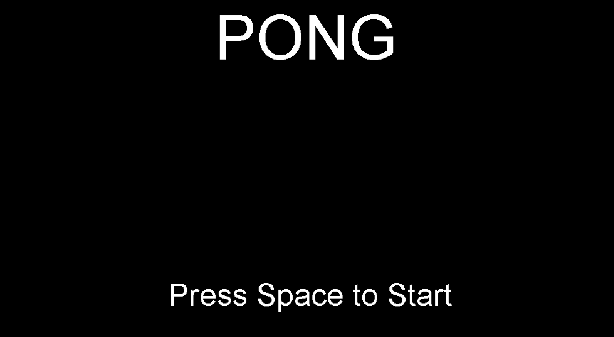
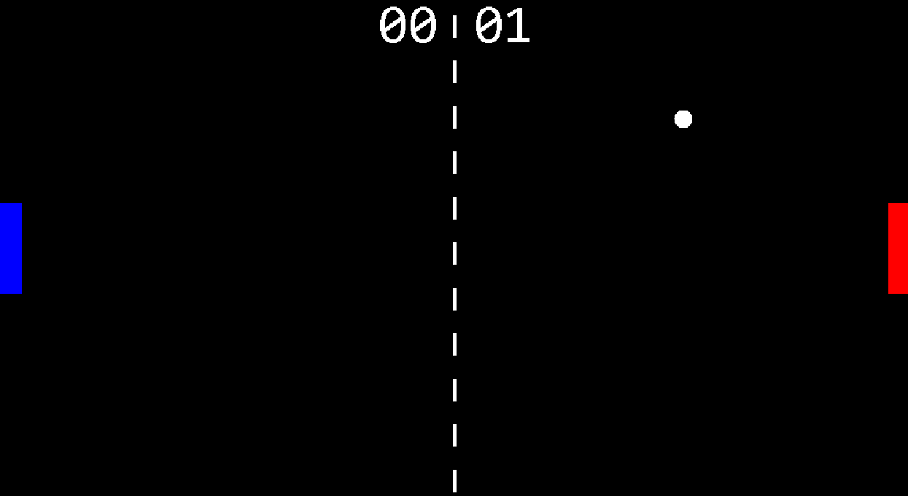
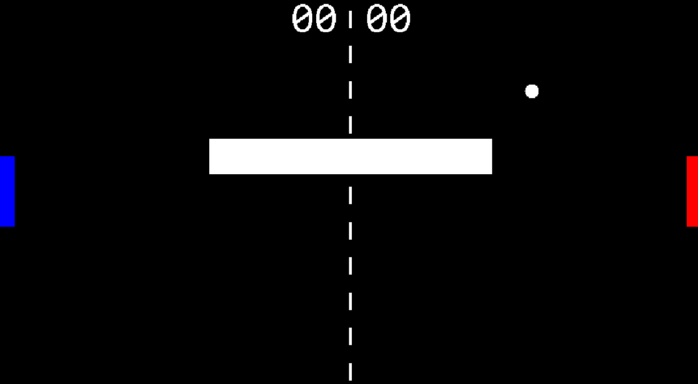
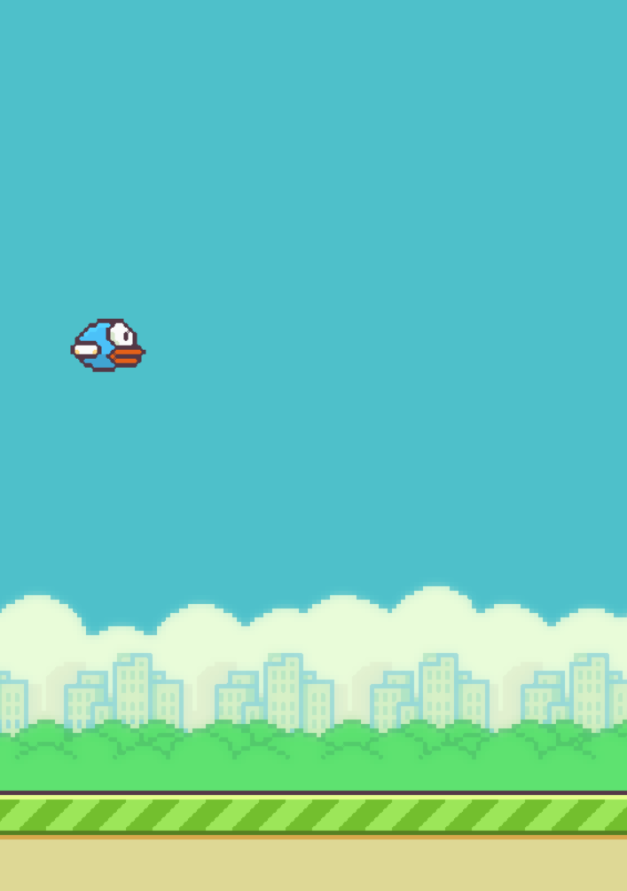
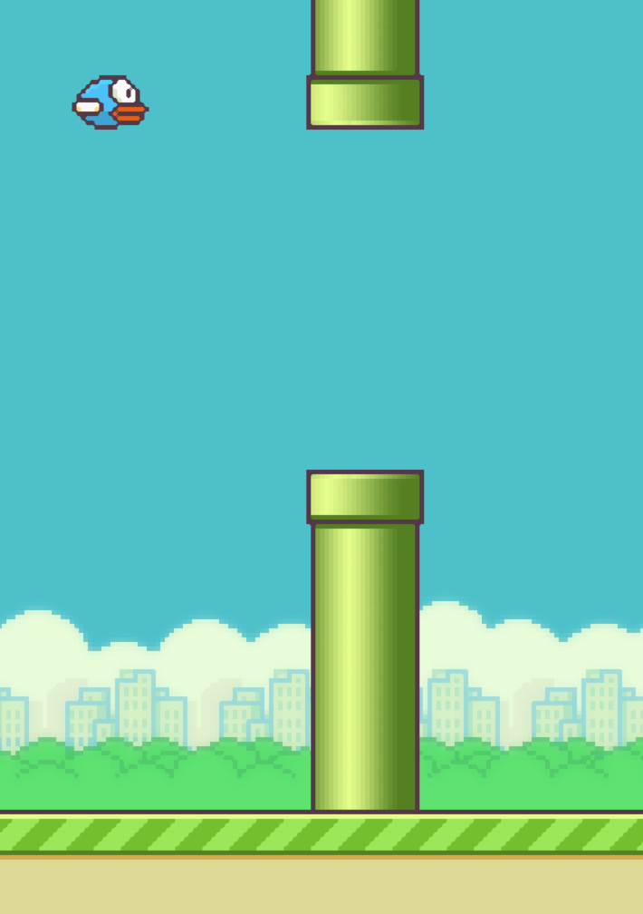
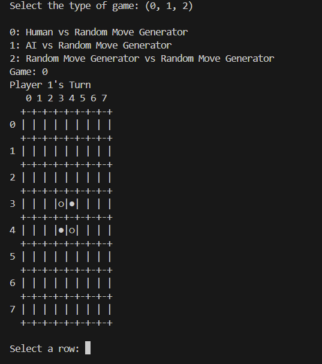
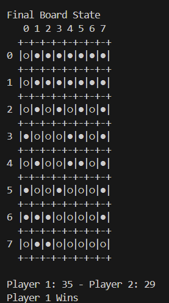

Pong
Overview:
This game is a customized version of the original Pong game that was released in 1972. Every time the game opens, a random barrier (or no barrier) is generated for map variety. The game goes endlessly until the users want a new map and the ball speeds up after every collision with the paddles to make the game harder as the rally gets longer.
Technologies Used:
Front-end: Java, 2D Graphics, Game UI, Input Handling
Back-end: Also Java, Game Loop Architecture, Collision Detection,
State Management



My Code:
Flappy Bird
Overview:
This game is almost an exact copy of the original Flappy Bird that was released in 2013, but I wanted to prove someone wrong.
Technologies Used:
Front-end: Graphics Handling and Performance Optimization,
Frame-rate Controlled Rendering
Back-end: Python, Pygame, Event-Driven Programming


My Code:
Othello
Overview:
This game is a text-based version of the Othello board game released in 1971. There are 3 modes: you, a calculated bot, and a random move generator versus the random move generator.
Technologies Used:
Front/Back-end: Python, OOP, Modular Design

